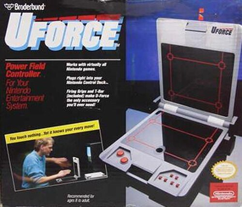
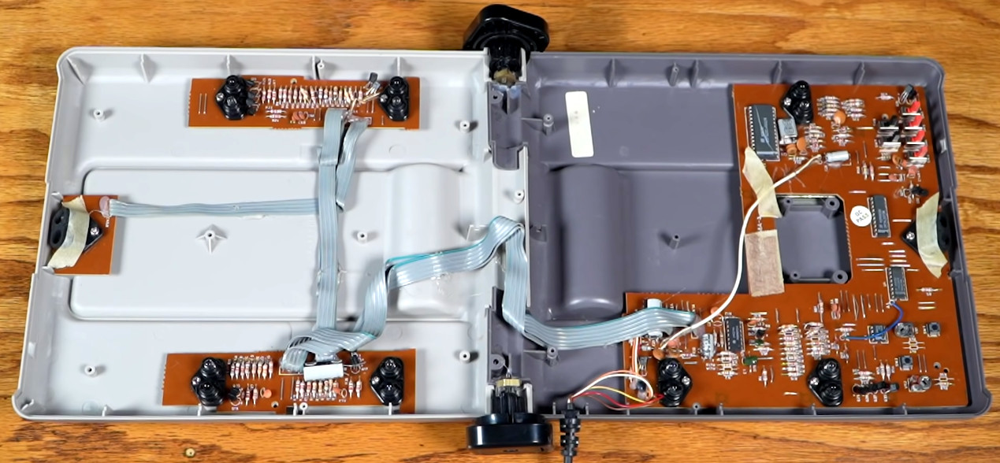
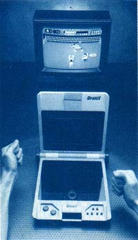

U-Force
The NES touchless controller with the unfortunate slogan 'Don't Touch!' — nine infrared beams, zero playability, one magnificent failure

Overview
The U-Force was a touchless infrared game controller for the Nintendo Entertainment System, released in 1989 by Broderbund Software — a company known for publishing The Print Shop, Where in the World Is Carmen Sandiego?, and Prince of Persia, not for manufacturing consumer electronics. The device unfolded like a laptop into two perpendicular panels, each housing arrays of infrared LEDs and photodetectors. Nine IR emitter-detector pairs created a sensing field about one cubic foot in volume above the device. When a player's hand moved through this field, it interrupted different IR beams; an onboard COP320 microcontroller translated beam occlusion patterns into directional controls and button presses via the standard NES controller protocol.
The U-Force was genuinely sophisticated. In analog mode, it output 5-bit sensor readings — more precise than the NES's native 8-button digital protocol, presaging analog thumbsticks by seven years. DIP switches selected between six operating modes optimized for different game genres. Accessories included a "Power Bar" for boxing games, hand grips, and a T-bar flight yoke whose underside contained IR reflectors. The device's failure was comprehensive: ambient household lighting confused the IR sensors, calibration drifted during play, the lack of tactile feedback made precision impossible, and each unit required painstaking manual calibration at the factory by hand-cutting resistors and soldering capacitors. The slogan "Don't Touch!" became an ironic epitaph. IGN ranked it the 8th worst video game controller ever made.
Deep dive
Broderbund Software was founded in 1980 by brothers Doug and Gary Carlston. By 1989, it was one of the largest educational and entertainment software publishers in the world. The U-Force was their sole foray into hardware manufacturing. The project was led by David Capper, a former Mattel Toys executive who had worked on the Intellivision. The electronics prototype was developed by Stan and Avi Axelrod from San Francisco's Exploratorium museum — an institution dedicated to hands-on science exhibits. Broderbund invested heavily, launching at the January 1989 Winter CES alongside the Power Glove. Both devices embodied the same bet: that consumers wanted to move their bodies, not just their thumbs. Both bets failed.
The U-Force's two perpendicular panels contained nine infrared LED/photodetector pairs — at the time, more IR LEDs than any other consumer electronic device. The top and bottom panels fired beams in perpendicular orientations, creating a quartersphere-shaped detection volume about 12 inches in diameter. When a hand entered this volume, it blocked specific beams. The COP320 microcontroller (National Semiconductor, 20 MHz) polled the photodetectors, ran an 8-bit ADC0831 analog-to-digital converter, and computed which D-pad directions and buttons to report.
Each unit required individual factory calibration. Groups of resistors were soldered in parallel onto the main PCB, and technicians used wire cutters to physically sever individual resistors to tune sensor sensitivity. Additional capacitors (50–100 pF, up to three in parallel) were soldered in as needed. Reverse-engineerer Kevin "Kevtris" Horton documented: "The design is pretty terrible and needed a lot of hand tweaking to make it function." Some units had resistors re-soldered and re-cut multiple times before passing quality control. This hand-tuning process was incompatible with consumer electronics manufacturing at scale — every U-Force was effectively a prototype.
The U-Force and the Mattel Power Glove both launched in 1989 at nearly identical price points ($69.95 vs. $79.95). Both promised to replace the traditional gamepad with body-based interaction. But their approaches were diametrically opposed: the Power Glove was wearable (fiber-optic glove with ultrasonic position tracking), while the U-Force was stationary (a desktop IR field you reached into). The Power Glove sold 1.3 million units and became a cultural icon. The U-Force sold so poorly that surviving units are rare today. Together they represent two complementary visions for how the body should interact with games.
The U-Force failed for reasons that are textbook HCI lessons. Environmental robustness: consumer IR sensing in 1989 could not handle living room variability. Calibration: the device required a stable sensor-environment relationship impossible to guarantee outside a lab. No tactile feedback meant users had no proprioceptive reference for the sensing field's boundaries. Gorilla-arm fatigue: holding hands extended above the device for minutes was physically uncomfortable. Software ecosystem gap: no NES games supported analog input, so the U-Force's most interesting capability was unused. Every one of these failure modes would be re-encountered with Kinect, Leap Motion, and other touchless controllers decades later.
The U-Force is a landmark in the history of touchless consumer interfaces. It predates Microsoft Kinect by 21 years and the Nintendo Wii by 17. Its raw analog sensing capability anticipated the analog thumbstick era (N64, 1996) by seven years. It demonstrated — painfully — that novel interaction models require robust sensing, environmental tolerance, and software support to succeed. The reverse-engineered protocol documentation by Kevtris has made it a beloved artifact in the retro-computing community.
Team & pioneers
- David Capper. Project lead; former Mattel Toys executive who worked on Intellivision.
- Stan Axelrod. Electronics engineer from San Francisco's Exploratorium museum; created working prototype.
- Avi Axelrod. Electronics engineer; co-developed the prototype with Stan Axelrod.
- Richard Bernstein. Broderbund executive who championed the U-Force project.
- Stuart Weiss. Broderbund executive; co-championed the hardware venture.
- Kevin "Kevtris" Horton. Reverse-engineered the U-Force protocol and documented its internal architecture.
Media


Sources
- Wikipedia — U-Force
- Kevtris Technical Reverse-Engineering (complete protocol & circuit analysis)
- Hackaday — "Why You've Never Heard About Nintendo's U-Force" (2022)
- Retro Handhelds — "Game Over: Broderbund U-Force" (Jim Gray, 2026)
- Kotaku — "Don't Touch This Horror Of A NES Controller" (Luke Plunkett, 2011)
- COMPUTE! Magazine Issue 106 (March 1989) — original launch coverage
- Internet Archive — Original Broderbund U-Force Manual
- ClassicGamesBlog — U-Force review with box/accessory photos